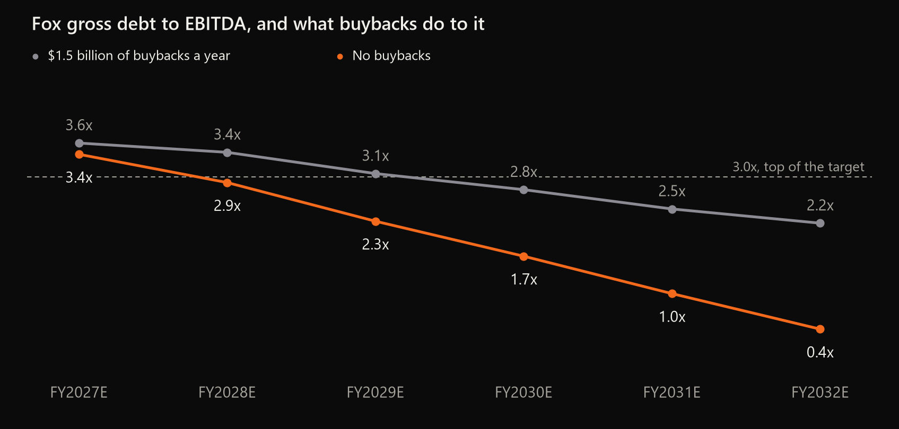

Fox and Roku DCF model.

What Fox is worth now that it owns Roku, and how fast it can pay for it.
In short
- The question
- What is Fox worth now that it owns Roku?
- Data and method
- The deal pro formas, Roku's filings and an 8.8 percent WACC that weights the two businesses.
- What I found
- $59.59 and $50.24 a share, against $62.62. Net leverage went from 0.6 to 3.3 times.
- What it means
- Gross leverage gets under 3.0 by fiscal 2028 without buybacks, and not until 2030 with $1.5 billion a year.
The numbers
Perpetuity method, base case. The average of the two share classes is $62.62.
Exit multiple at 8 times FY2032 EBITDA.
Perpetual growth the price implies.
Net debt to EBITDA. It was 0.6 before Roku.
EBITDA to interest, on about $1.1 billion a year.
Bear to bull, both methods.
These are model outputs under stated assumptions. Nothing on this page is a recommendation to buy or sell anything.
In pictures

Base case EBITDA and free cash flowRoku's growth covers the decline in cable. 
Where the answers landThe price is above both methods and inside the range. 
Gross leverage, year by yearBack under 3.0 times by fiscal 2028 without buybacks, and by 2030 with them.

Why this company
In October I modeled Fox alone, because Roku had not closed. It closed on November 6, so that company no longer trades. Fox paid about $14 billion of cash and 144 million shares, sold $8.4 billion of notes and took a $2 billion term loan.
I rebuilt it from the pro forma 8-K/A, the notes prospectus and Roku's filings. A linear network company with almost no debt became a levered one that is part technology.
How it is built
- Base year. Fiscal 2026, pro forma. Fox has $17.1 billion of revenue and $3.9 billion of EBITDA. Roku has $5.2 billion and $0.7 billion before stock compensation. The $302 million they sell each other comes out.
- Fox. The same three lines and growth rates as in October. The margin holds at 22.8 percent in FY2027 after a World Cup quarter, then drifts to 20.
- Roku. Platform revenue grows 17 percent, fading to 8. The margin before stock compensation goes from 15 to 21 percent. That starts a little above Fox management's case in the proxy, since Roku has beaten it, and ends a little below. Stock compensation comes out on its own line.
- Synergies. $360 million of the $400 million target by FY2030. Each $100 million is worth about $1.80 a share.
- One time cash. About $680 million for Roku award payouts and integration. Fox has not disclosed an integration figure, so part of that is mine.
- Taxes. Roku's losses and credits save about $640 million over five years, worth about $1 a share. The limit after a change of ownership is not disclosed.
- Discount rate. Unlevered beta 0.93, with Fox at 0.6 and Roku at 1.4 weighted by deal value. Cost of equity 10.4 percent. Cost of debt 6.4 percent, from Fox's own November 10 year. WACC 8.8 percent.
- Equity bridge. $16.9 billion of debt, $2.75 billion of cash and 570 million shares. The prospectus table prints $4.4 billion of cash, and its own footnotes work out to $2.75 billion. I used the footnotes.
What I got wrong first
Fox's EBITDA is revenue less operating costs less overhead, so stock compensation is already out of it. My template took out another $140 million a year. Fixing that alone moves the October value from $72.52 to $76.31.
I also wrote that Roku would close in the first half of 2027 at the earliest. It closed on November 6. And I credited fiscal 2026 to Super Bowl LX, which was on NBC. Fox's revenue grew 5 percent without it.
What would change the answer
- The discount rate. A point of WACC is worth about $11 a share. Roku's beta is my judgment, and it is the biggest one here.
- Roku's margin. Each point, every year, is worth about $1.60 a share.
- Roku's growth. One more point of platform growth a year is worth about $1.20.
- Cable decline. One more point a year takes away about $0.80. It was $2 when cable was most of the company.
- The lawsuit. Newsmax has asked a court to unwind the deal, per the Washington Times. It is not in the model.
Since the model
- The notes. $8.4 billion in seven parts on November 10, from 85 bp over Treasuries at 3 years to 200 bp at 40. The 10 year came at 145 bp and yielded 6.435 percent.
- The first quarter. Revenue rose 22 percent to $4.6 billion. Free cash flow was $503 million, against negative $234 million a year earlier. The 10-Q credits the World Cup, so one quarter does not settle the weak fiscal 2026.
- Ratings. Baa2 and BBB, both stable, per the 10-K. I have not found a new action since the deal closed.
- The advisers. In the proxy, Roku's adviser put 8 to 11 times on the two together, before stock compensation. My 8 times is after it. Fox's adviser used 5.5 to 7.5 on Fox alone and 15 to 20 on Roku.
The model
Download the Excel model · Back to the five
Blue cells are inputs. Pick a scenario in Inputs cell C5. The debt, the paydown and the October numbers have their own sheets. Nothing in the model comes from a Bloomberg Terminal or from any employer.